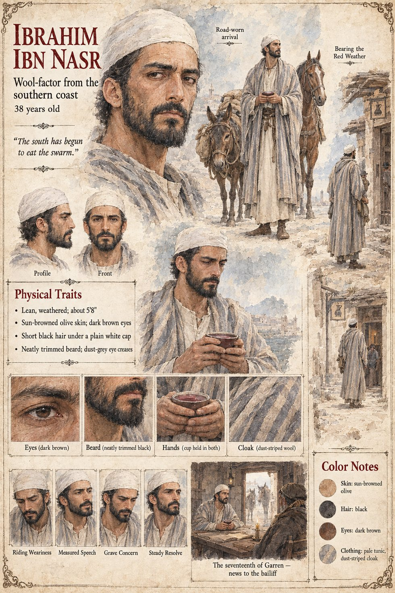

Ibrahim ibn Nasr
Wool-factor of the port of Almariya · first bearer of the news of the Red Weather · 38 years old by his sheet
A wool-factor from the southern coast who rides eleven days up through the Serra on a mule he intends to sell and a horse he does not, and arrives at the inn below the castle spur on the seventeenth of Garren with a cup of thin red wine and the expression of a man composing, with some care, a sentence he knows no one will believe. He tells it to the bailiff Arnaut in the dialect of the district, which he speaks well and with a slight stiffness, as of a man handling a tool borrowed from a neighbor: that the Red Weather has come up out of the dry country beyond the southern mountains, eaten the barley of the coast in early summer and the olives and vines of the hill-country in late, and that on the quay of Almariya he watched a cloud the color of rust come over the sea-wall at noon without a sound that a man could have named, and the market's awnings turn into something that moved. It did not stop at the stubble. Arnaut, who has been handed a figure that fits none of his columns, pays for the wine himself, the first time in the factor's recollection that an official of any country has done so.
On the first of Havren he is at Brunissen's tavern, persuaded after much wine to be a guest, and tells the room, with a certain defiant humor, that in the south the people have grown so tired of the Weather that they have begun to eat it: dried on hot stones with salt, fried in oil and sold by the bowl, the fat ones of the early swarm tasting something like toasted nuts. The room answers with a long and affectionate silence, and then someone laughs. It is the most consequential throwaway line in the case. On the afternoon of the twenty-seventh, with the dead heaped round her ankles and the Vigil's porridge gone, the miller's widow Ermengarda says to the stranger, in the flat tone of a woman discharging an obligation, that in the south, so the factor had said, they ate them. The manuscript does not say what became of him. It gives his name, his trade and his manner; the sheet's thirty-eight years, dust-striped cloak, white cap and neatly trimmed black beard are its own.
“It stopped when there was nothing left that it could stand on.”
Appears In

Related Subjects


Related Records

On the seventeenth of Garren, in the inn below the castle spur, Ibrahim ibn Nasr holds his cup of thin red wine in both hands and tells the bailiff Arnaut a sentence nobody will believe: the Red Weather has come up out of the south.
![A packed low-ceilinged tavern lit orange by a hearth and candles, a broad laughing woman in a dark bodice and white sleeves at the upper left holding up a mug, a lean bearded man in a white head-cloth and striped cloak at the centre with a cup of red wine glancing aside, a leathery man in a brown cloak holding a small tin disk up between finger and thumb, other drinkers leaning on elbows on benches and barrels, coins and tin cups on the stained table in the foreground and a window of dark blue night at the upper right](../images/scenes/what-the-tavern-knew-grid.jpg)
On the first of Havren the tavern at Vilarnau holds forty on benches and barrels: Brunissen says somebody has to dig a hole, Ibrahim ibn Nasr has just told the room that in the south they eat the Weather, Gaucelm sells tin wards, and Observer 551, as a rat-catcher, listens by the door.